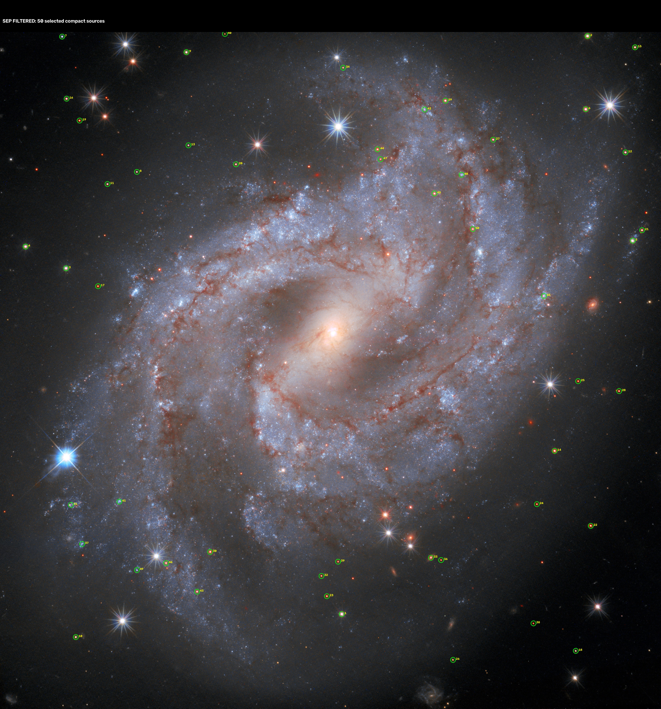
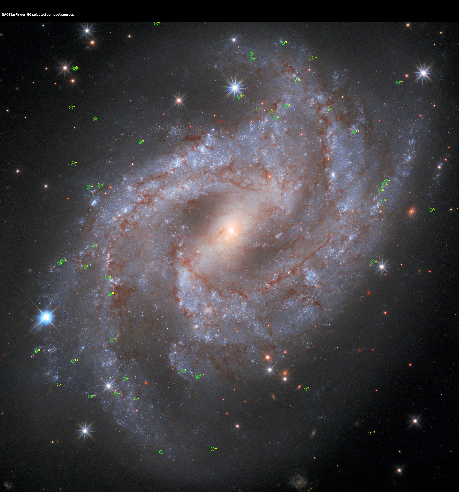

ASTROMETRY SOURCE DIAGNOSTIC — NGC 2525
SEP selected 50 · DAOStarFinder 50 · image2xy 0
Astrometry status: SOLVE_FAIL
Calibration: RA 121.4072916667 · Dec -11.4265944444 · orientation 0° · display FOV 0.043167°
Astrometry status: SOLVE_FAIL
Calibration: RA 121.4072916667 · Dec -11.4265944444 · orientation 0° · display FOV 0.043167°
SEP — controlled compact sources

DAOStarFinder
